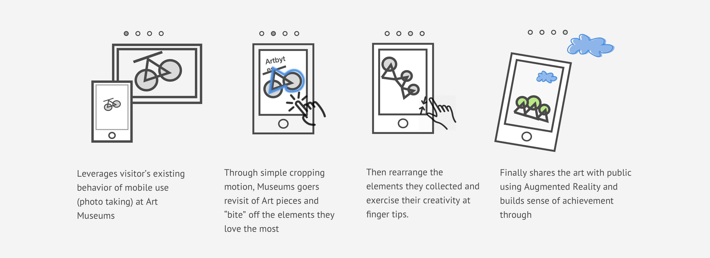
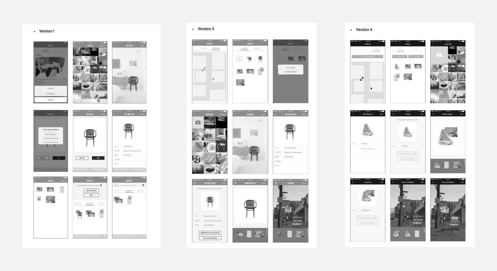
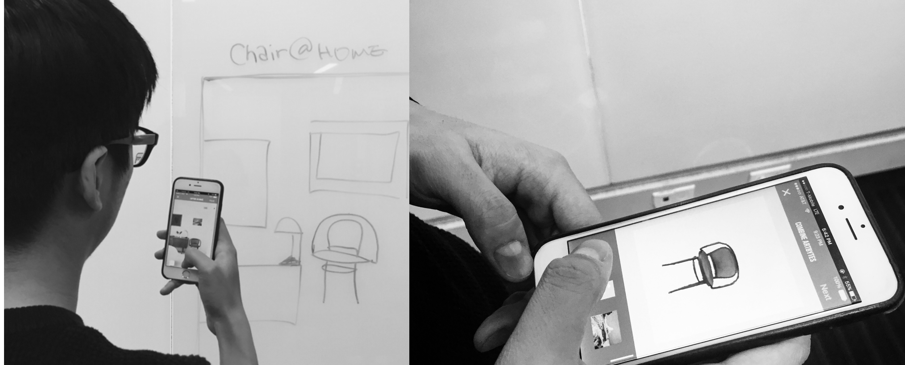
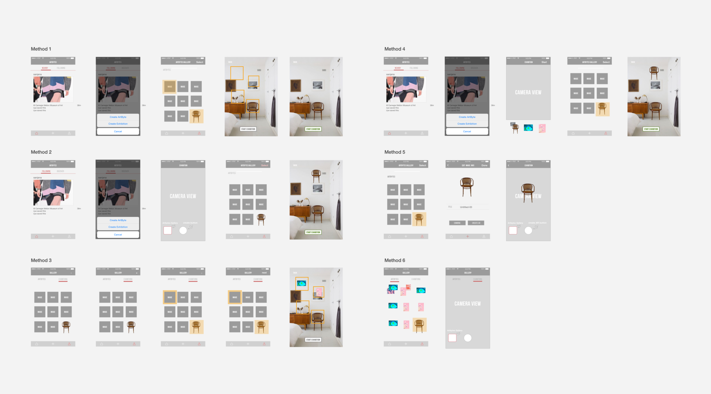
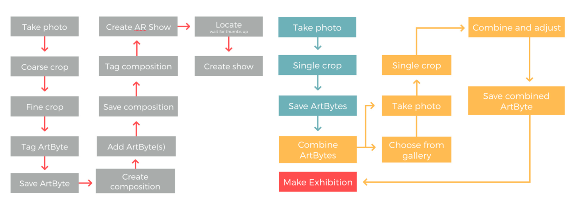
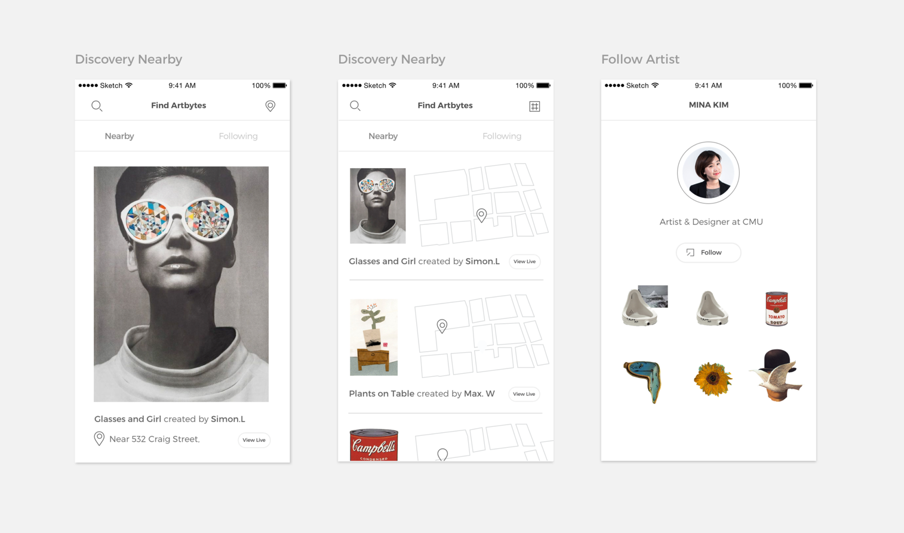

Spring 2016,
we brought our client Ali Momeni's concept of Artbytes to life.
Art Museums provide wonderful experience for museum goers to enjoy the beauty of art, inspired by the power of master pieces. Yet this engagement tends to temporary and vanishes at the end of the trip. What's lacking from the current museum going experience? We present you Arbytes, an IOS App that encourages museum-goers to rethink what they see at art museums, create their own visual contents through simple cropping and combination, and share with the public using augmented reality. In this project, our main goals were to validate our Client's idea, improve the design based on existing features and ultimately give museum goers the confidence to be creative through simple and intuitive design.
View the concept video
Defining Painpoints:
Museum going Experience is passive
Since the initial idea wasn't backed with any data or user research, the team started the project by understanding what exactly the pain points are in current museum/art veiwing experience. We started the redesign process with relooking into the problems, After 20+ interviews, countless trips to art museums/galleries and became "stalkers" for ten weeks straight, we defined these problem spaces and also found these insights.
P1. Passive Engagement
Although the experience is engaging in the moment, visitors leave the museum space with all this documentation but are unlikely to reflect on it after
P2. Exclusive Art
In terms of art, access is limited to the museum or gallery, making the experience of viewing art exclusive. In fact, some of the most innovative and creative art is proprietary, making it difficult to engage with regularly.
P3. Disconnected Experience
While each gallery can provide an interesting experience, museum-goers often have difficulty connecting experiences across museums. Experiences within museums can become very isolated and solitary
I1. Novel Experience provided by technology
From our expert interviews, we learned that viewers are easily engaged when new technology is embedded in the exhibition experience. Yet it must encourage careful thought and personal expression. Technology can often be distracting and take away from the purpose of a museum experience.
I2. Leverage people's already existing behavior
This includes social aspects as well as personal aspects, including documentation of experiences through photos.
I3. Lack of confidence in creation
Users are interested in the ideas of creating their own visual contents, yet they are worried that they might not be creative enough to do so.
Challenge:
"I don't think
I'm creative enough to do this."
After our design synthesis, we thought Artbytes could be a way to help people document their thoughts and be creative. Yet we need to create more motivation to onboard our users. We came up with 8 ideas centered around how Artbytes could be improved, and using Augmented reality to find artbytes created is one of them. We decided to use two ways storyboarding and experimental workshops to rapidly prototype our ideas. From these tests, we learned that people love the idea of Augmented reality and are eager to share.
Conclusion:
Creativity doesn't have to
mean reinventing the wheel.
We also held little workshops and conducted think-aloud interviews to test if cropping would be a barrier free way to create art and if this interaction would actually help users think of what they like about art. From these workshops, we learned that cropping method does help users think actively about the art while creating and gave users confidence in the creation process."This is pretty fun actually." "Definitely not as hard as I thought it would be".

Refocus the problem:
Push for simple yet intuitive
interaction to lower the barrier of entry
After speed dating and Art-making workshops, the team decided to put the whole design focus on prototyping the Artbytes creation and Gallery creation experience as we heard concerns that creating art might be the hardest part/most confusing part on a digital platform. We wanted to lower the level of entry of creation to the minimum to give users confidence in practicing their creativity and making this App for every museum goer. After 5 iterations, 50+ usability testings and 3 different prototyping tools, we came to something that's a lot more sense making.
The first version of the workflow of Artbytes used to be very linear and stringent. A lot of steps were mandatory and little affordances were given.The vocabularies we had such as “Artbytes” and “AR show” were hard to be understood by first users.
While I brainstormed six different ideas to minimize the steps users have to go through to post exhibitions, I held a body-storming session with my friends to mimic different possible use case scenarios. The practice was helpful as in it let me focus on the option of “creating directly from my gallery" that further impacted the overall information architecture.
 Key Final IXD decisions
Simple Cropping Edge Tracing Method
Participants became frustrated that the app repeatedly crashed during the cropping process, particularly during the fine crop process, because none of their work had been saved. However, the bigger problem was that users did not understand why the app included two cropping stages. We decided to go with the only simple cropping edge tracing method as participants found that this method was the most intuitive and that they were used to this method of cropping since it is similar to cropping experience in real life.
Naming of ambiguous vocabs
Artbytes, Composition, AR show -> Artbytes, Megabytes -> Artbytes, Exhibition that conveys the concept of showcasing the user'sw work.
Removal of Combining as a mandatary step and create one single gallery
We decided to remove the mandatory step of combining ArtBytes, allowing for more flexibility in the creation process. Users did not know whether an Exhibition was meant to share a single ArtByte or combined ArtBytes, creating a mental model that posting an Exhibition is unrelated to creating ArtBytes. In reality, users need to see this connection to create ArtBytes that suit particular locations for sharing. We created a single gallery for ArtBytes and removing the terminology that distinguishes between a single ArtByte and combined ArtBytes to share. Users are now able to develop a more accurate model of what they are creating and sharing with others by having a gallery with everything they have created and everything that can be shared.
Augmented Reality for Exhibition posting
We decided to add the exhibition as a way to motivate people to create/share by bringing out a much more novel experience like they have never had.
Clean minimal visuals
We tried many different visual compositions and finalized decided on a more minimal visuals to let users focus on the content they are creating. (We were so in shock when the Instagram new design came out a week later after our final presentation!)
A much more dynamic Workflow
User testing results and heuristic evaluation revealed that the existing application’s workflow is stringent and confusing for the users. There were too many mandatory steps for users to make an Exhibition, throughout which users were brought back to home screen without a clear affordance about the next steps. The new workflow is a lot simpler yet more dynamic. Users were given a lot more freedom and flexibility, such as combining ArBytes directly from the home screen. The fixed header now gives a clear visibility of where the users are in the process of creating and provide flexibility to exit out from each step or move forward in the creating process.
What's next?
Artbytes is coming!
Artbytes will be developed as a native IOS over summer of 2016! It was a great experience to work with a real client for the first time and received an A as our final grade from our advisor :)
Even though the creation aspect of Artbytes has been tested with confidence yet the team didn't get to spend much time on the exploring & social aspect of the App. Here are some sketches we had regarding the exploring feature. If given more time, I would really love to explore more ways to create the visual contents.
